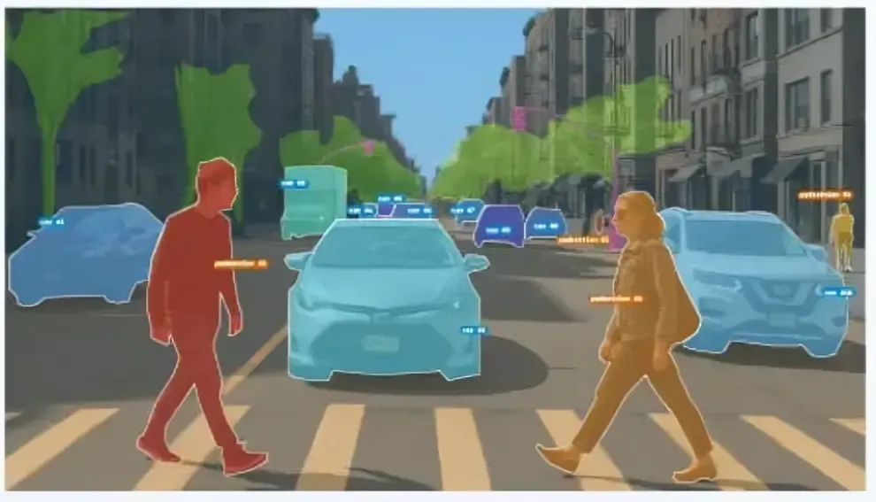

Amazon Go Stores
Walk in, grab what you want, and leave. Ceiling cameras track every item you pick up and charge your account without scanning.
Google Lens Visual Search
Point your phone camera at a plant, building, or product and get information about it instantly.
Sports Broadcast Analysis
Systems track player movement, speed, and formations in real time during live broadcasts for the stats overlays you see on screen.
Agricultural Drone Monitoring
Drones fly over fields to detect crop disease, irrigation problems, and yield estimates across thousands of acres.
Walmart and Target Shelf Monitoring
Cameras and robots scan store aisles to detect out-of-stock items, misplaced products, and pricing errors in real time.